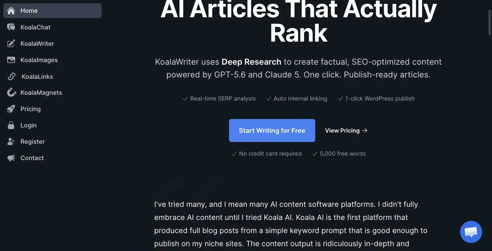

Koala AI
Koala AI is an AI writer built specifically for SEO content: KoalaWriter does real-time SERP analysis and produces publish-ready, keyword-optimized articles rather than generic copy. Pricing starts at $9/month (Essentials, 15,000 words) up to $99/month (Boost, 250,000 words). The site's verdict is a strong pick if content marketing or affiliate content is a real part of your business, the Essentials tier is cheap enough to test on a single niche site before committing further.
Koala AI writes SEO content that reads like a human wrote it on a good day, not like a robot trying too hard. At $9 a month, it's cheap enough that you'll forget you're paying for it, which is either great value or a subscription-management problem.
- Value for price8/10
- Capability7/10
- Ease of use7.5/10
- Trial safety8/10
Koala AI's KoalaWriter differs from a general AI writer by running real-time SERP analysis before drafting, checking what's actually ranking for a target keyword and structuring the article to compete with it, rather than generating generic prose from a prompt with no research behind it.

Koala AI markets itself directly at SEO practitioners and niche site owners rather than general writers, with features like real-time SERP analysis, auto internal linking, and one-click WordPress publishing built specifically around ranking content, not just producing readable text.
Example from koala.sh. Not independently tested by Solos Gems.Pricing breakdown
- Essentials ($9/mo): 15,000 words/month via KoalaWriter, 250 KoalaChat messages/month
- Professional ($49/mo): 100,000 words/month, everything in Essentials, most popular tier
- Boost ($99/mo): 250,000 words/month, everything in Professional, for high-volume content operations
Where it still needs a human editor
AI-generated SEO content, even structured and researched, still benefits from a human pass before publishing: fact-checking specific claims, adding a genuine point of view, and catching the subtle repetitiveness that AI writing tends toward at volume. Koala AI's output is a strong first draft for a content-heavy solo business, not a fully autonomous publishing pipeline, treat the word allowance as draft capacity, not final-copy capacity.
Pros
- Real-time SERP analysis produces structurally competitive drafts, not generic prose
- Essentials tier is cheap enough to test on a single site before scaling up
- One-click WordPress publishing removes a real workflow step for content-heavy solo sites
Cons
- Still needs human editing before publishing, not a fully hands-off pipeline
- Word allowances reset monthly and don't roll over
- Best fit is narrow, general-purpose writers won't get as much value from the SEO-specific tooling
Common questions
Can Koala AI publish content without human editing?
No, treat it as a first draft generator, not a fully hands-off pipeline. Content still needs human editing before publishing, both for quality and to avoid the generic tells of unedited AI writing.
What happens to unused word allowance each month?
It doesn't roll over. Word allowances reset monthly, so there's no benefit to under-using one month expecting to bank the difference for a busier month later.
Is Koala AI worth it for general copywriting, not just SEO blog posts?
Not particularly, its tooling is specifically built around SEO-optimized blog content. General-purpose writers doing marketing copy, emails, or social content won't get as much value from the SEO-specific features as someone writing search-focused articles.